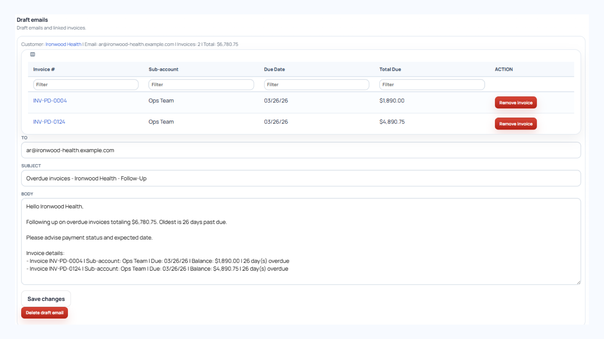
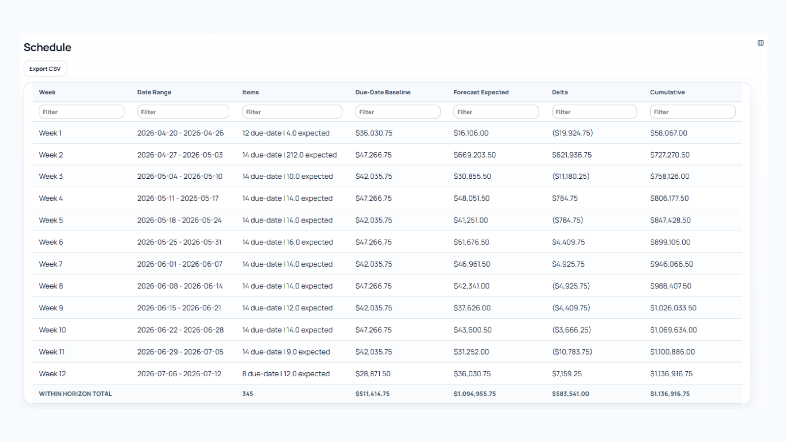

Automate follow-up workflows
Set up reminders, ownership rules, and customer follow-up sequences that keep collections moving without relying on spreadsheets or inbox tracking.
Ledgewave helps finance teams automate collections workflows, reduce overdue invoices, and gain clear visibility into expected cash flow — without replacing the systems they already use.
Whether you're running QuickBooks or managing a complex ERP environment, Ledgewave connects with your existing accounting systems, data exports, APIs, and workflows so your team can improve collections without disrupting operations.

Ledgewave helps finance teams streamline collections workflows from data import to cash forecasting.

Set up reminders, ownership rules, and customer follow-up sequences that keep collections moving without relying on spreadsheets or inbox tracking.

Track payment activity, expected collections, and account history in real time so finance teams can forecast cash flow with more confidence.
Track operational improvements and cash flow outcomes as your collections workflows mature.
Monitor improvements in days sales outstanding and average collection time after implementation.
Help AR teams manage more invoices and accounts without rebuilding reports in spreadsheets.
Gain earlier visibility into expected collections and changing cash timing.
Ledgewave is designed for organizations where collections complexity, customer follow-up, and cash visibility directly impact operations.
Manage complex customer relationships, recurring billing activity, and shared collections responsibilities with greater visibility.
Stay ahead of high invoice volumes and exception-heavy collections workflows while improving cash forecasting.
Keep growing customer accounts organized with automated follow-up, payment tracking, and collections visibility.
Start with the systems and workflows you already use, then expand automation as your operational needs evolve.
Launch quickly using QuickBooks, Xero, exports, or CSV uploads without waiting for a large ERP project.
Explore Self-Service IntegrationsSupport complex ERP environments, APIs, warehouse workflows, and security requirements with scalable deployment options.
Explore ERP IntegrationsExplore practical guides on improving collections operations, forecasting cash flow, and scaling receivables workflows.
Learn the warning signs that manual collections processes are slowing your finance team down.
Read the guideSee how planned billing and collections data can improve cash flow forecasting accuracy.
Read the guideUnderstand how payment history and customer risk signals help teams focus collections efforts.
Read the guideWhether you're starting with QuickBooks exports or coordinating enterprise AR operations, Ledgewave helps finance teams reduce manual collections work and improve cash visibility faster.
Automate reminders, ownership, and tracking so collections work keeps moving.
Give finance a clearer view of overdue invoices, expected collections, and changing cash timing.
Start from accounting data, ERP exports, CSV files, APIs, or secure-file workflows.
Support lean teams now and expand toward enterprise AR operations as needs grow.